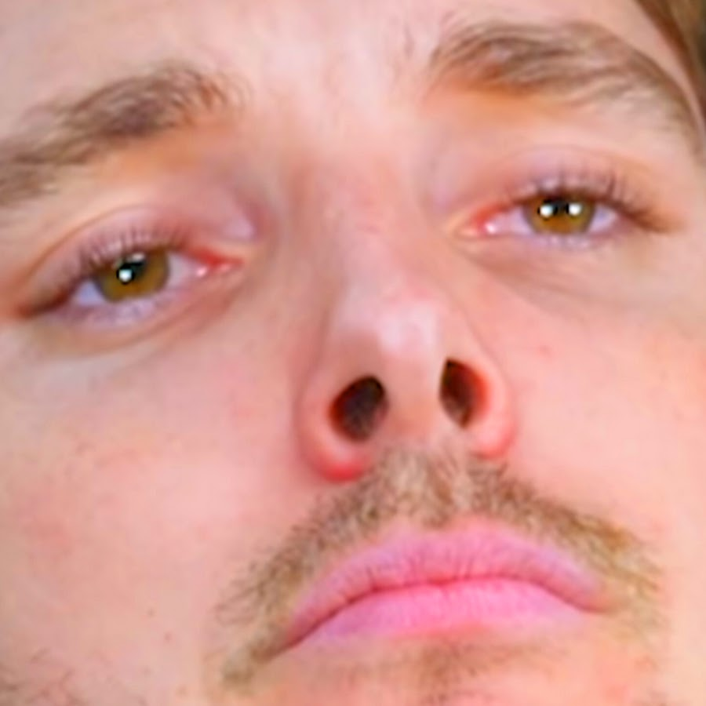

LazarBeam is an Australian YouTuber, gamer, and internet personality known for his funny Fortnite and Minecraft videos His comedic style and meme-driven editing have made him one of the most popular creators worldwide.
One of his most popular uploads is "I Spent $10,000 to Beat Every Roblox Game", which has over 60 million views
LazarBeam was born on 14 December 1994 in the
Central Coast, New South Wales, Australia
I enjoy LazarBeam’s content because he focuses on entertainment and humor rather than just competitive gameplay. His videos are chaotic, funny, and always creative.